Designed Converge, a medium that simultaneously mirrors the non-linearity of in-person conversations while leveraging the surveyability of digital conversations to maximize understanding.
Dates: April 2017 - May 2017
Team: Scott Dombkowski and Gray Crawford
For this project, my team was inspired by current conversational platforms used in a variety of contexts such as personal, team-based, and professional communications.
Existing platforms like Facebook, Messenger, iMessage, and Slack are some of the most popular conversational platforms/applications in the world today. One thing all these platforms have in common is that their responses are stacked vertically with one response following another. We believe that these linear arrangements are inherently limited and diverge from the nuance of in-person conversations. We set out to create an alternative, Converge.
Converge is our attempt to create a medium that simultaneously mirrors the non- linearity of in-person conversations while leveraging the surveyability of digital conversations to maximize understanding.
Research
In order to better understand the space of possibility of online conversations, we reached out to people with a number of different research techniques.
Interviews and Mapping Activity
We asked participants to rearrange comments from a Twitter debate that had multiple branching sequences of responses. We hoped that this activity would uncover users’ intuitions about spatial arrangements of conversations. We saw a variety of mapping techniques. One was more straightforwardly chronological, one explored reply-adjacency, and one organized responses based around agreement. Some participants’ lack of knowledge with the subject matter of the Twitter discussion made it difficult for them to engage with the content and decide on what arrangements suited them best.
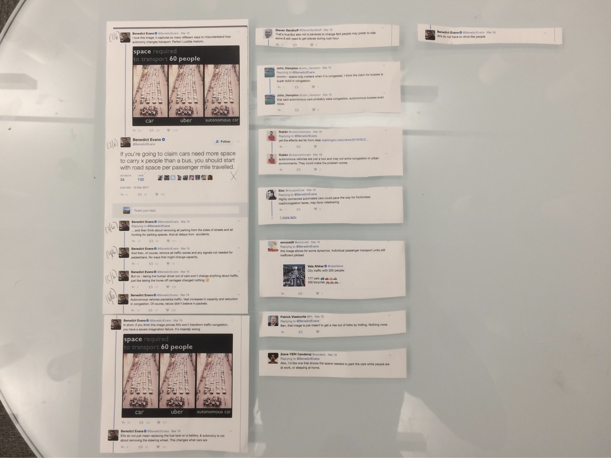
Twitter Conversation Mapping
Conversational Platform Survey
We created a survey asking participants about their likes and dislikes towards current conversational platforms. We also asked if a view of theirs had been changed as a result of an online discussion. We received over 100 responses. We tallied the most liked/disliked platforms and learned of a number of apps we were not aware of before this project.
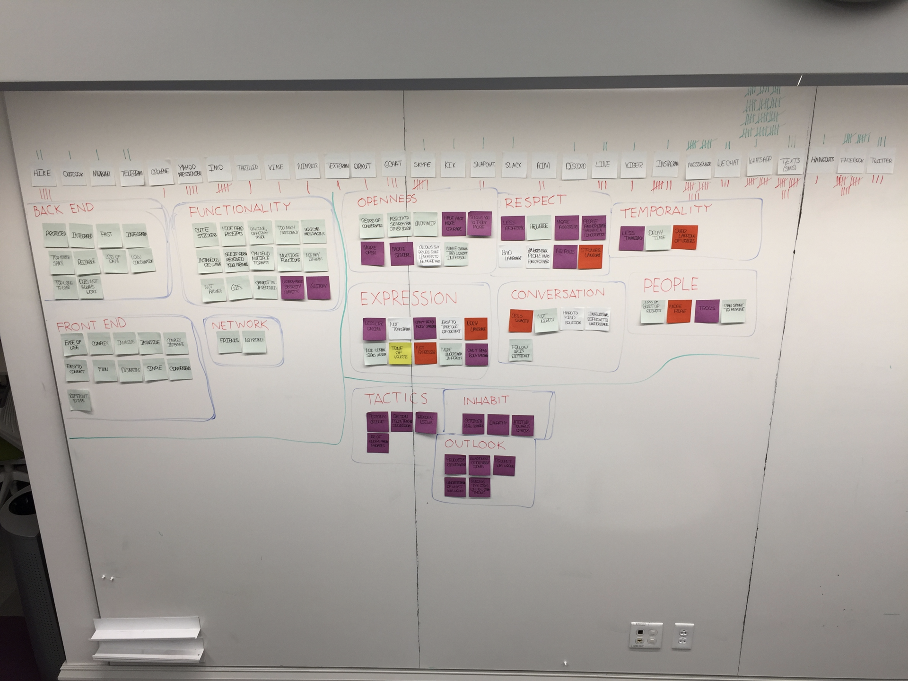
Survey Affinity Mapping
Discoveries
We learned and established a number of things through our initial research activities.
Throughout the process we struggled with articulating what we were trying to achieve when talking about our design to individuals unfamiliar with the space.
We found that people were so used to current digital conventions that it was tough for us to communicate about our proposal. We acknowledge that if we were better able to convey our platform, we could have created better questions to find more beneficial insights.
Design Goals
With the understanding we gained from our research and personas, we developed three goals to guide us in the building of Converge.
- We wanted to create a conversational tool that was non-linear, mirroring in-person conversations.
- We wanted to create something with a clear and coherent visual language.
- We wanted to provide users a workspace where everybody’s notes are visible, supporting a collaborative, mutually-built base of knowledge.
Evaluative Research
After coming up with some more developed concepts we presented them to Ahmed Ansari, a doctorate student at Carnegie Mellon's School of Design, and had a comprehensive discussion about the dynamics of digital conversation.
We weighed the positive and negative aspects of having text show in real-time on the screen as it is typed (as was implemented in Google Wave) versus having a dedicated submit button where the user can compose their thoughts before sending the finalized message. Live text increases wariness, mirroring the wariness of in-person speech, where every word put down is perceived by the audience. People would be less articulate without a composition space separated from the space for submissions. A compose window is a thought aid, a materialization of thought. It is helpful to allow phrasings to be developed and enables reflection.
A possible downside of the greater surveyability of digital conversations (as written correspondence suffers the same fate) is that the luxury of time provided by static, visible words invites over-analysis. It is unclear how that might be avoided, but it is an interesting point nonetheless.
We spoke about how more-nuanced non-verbal communication might be included, possibly involving the typeface changing to evoke inflections / intonations. Such forms could be parameterized to explicit and measurable changes in verbal dictation / video of the speaker.
We spoke about the usefulness of having the entire conversation surveyable, and how it might be explorable after-the-fact, for analysis.
Ideation
Both during and after our research stage, our team took part in numerous sessions where we discussed the platform we wanted to create.
These sessions took place in front of whiteboards and large pieces of paper. They included lists of potential functionality and sketched out mockups. Below are results of these sessions, followed by the multiple iterations of wireframes.
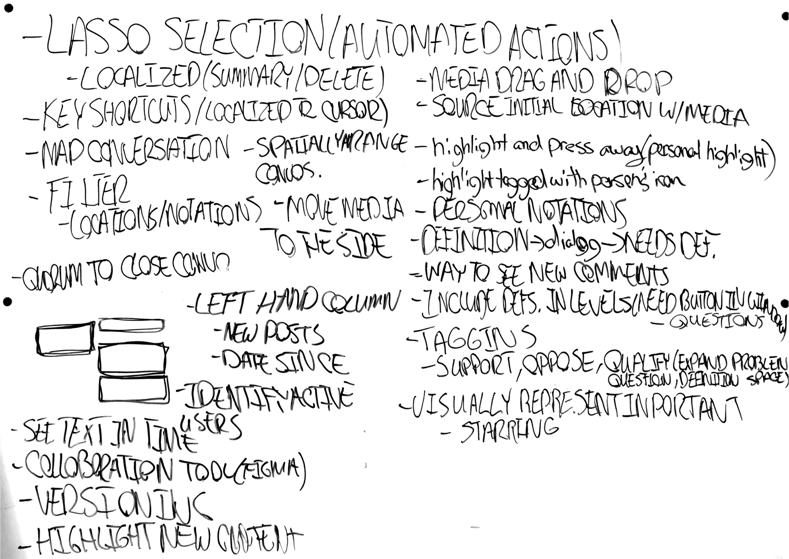
Ideation
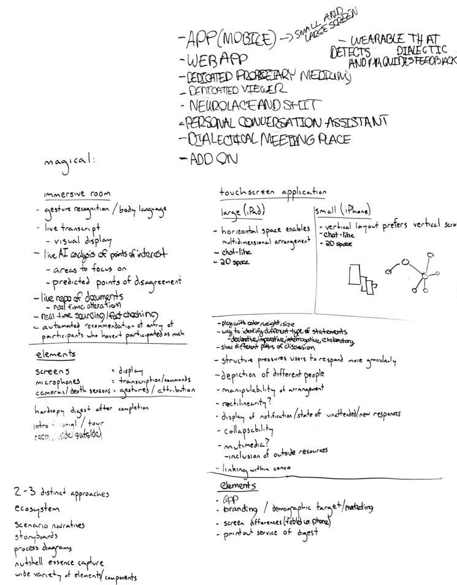
Ideation
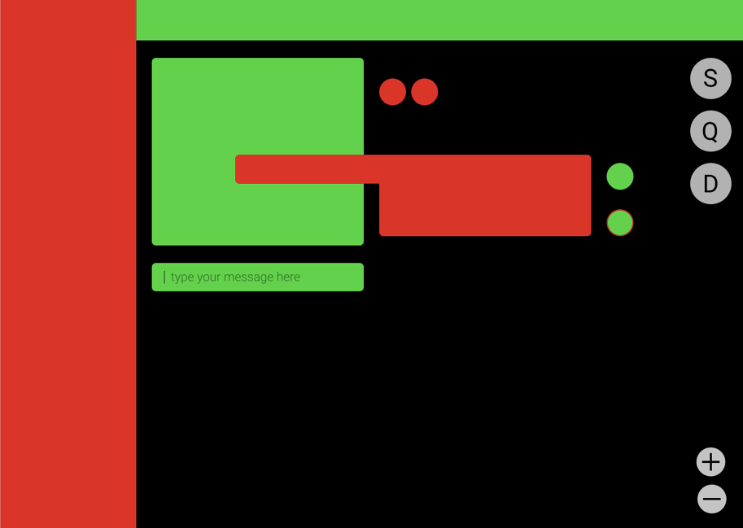
Wireframe
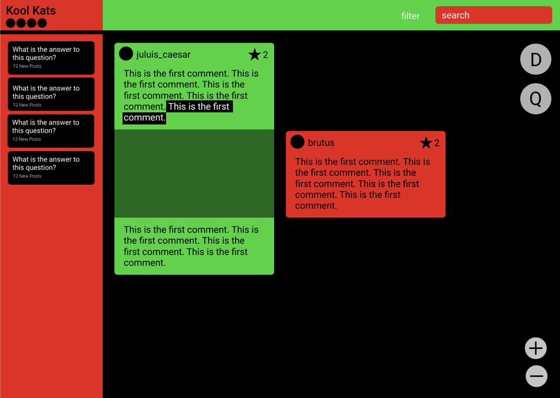
Wireframe
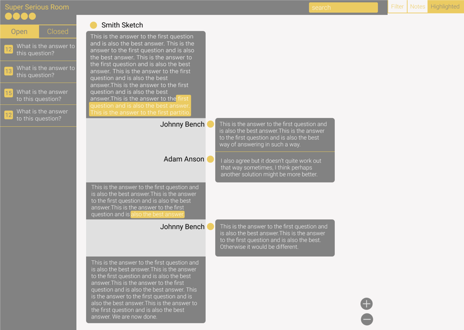
Wireframe
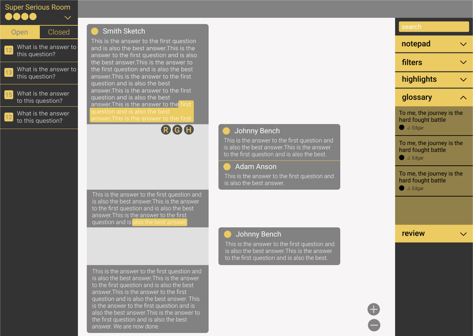
Wireframe
Final Design
After researching and ideating, our team came up with Converge. Converge is a conversational platform with both personal computer (PC) and virtual reality (VR) components.
Rooms and Conversations
Converge is organized through rooms and conversations, similar to Slacks' model. A user creates a room and invites users pertinent to that room. Anyone with access to that room can start a conversation.
A user can be ensured that only the people needed in that specific conversation will have access to that conversation. If a user finds they have no existing room with the right cast of characters, they can easily create a new room and invite the users they desire to have in that conversation.
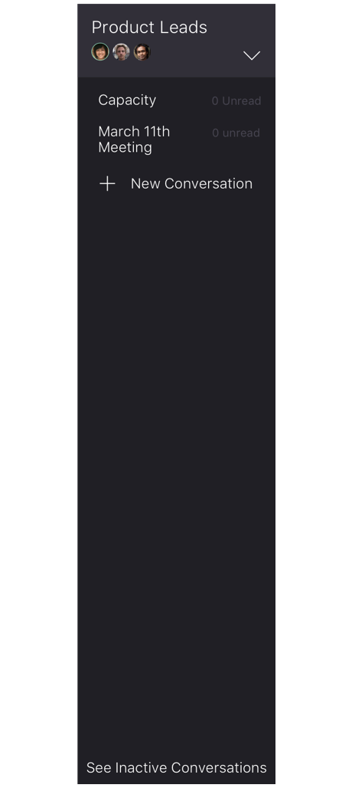
Rooms and Conversations
Hierarchy
Converge has a unique hierarchy not seen in other conversational platforms.
Instead of having a linear hierarchy, Converge conversations branch out, delineating subtopics spatially. This allows the conversation to be more surveyable, and individual topics can split off into their own subtopics.
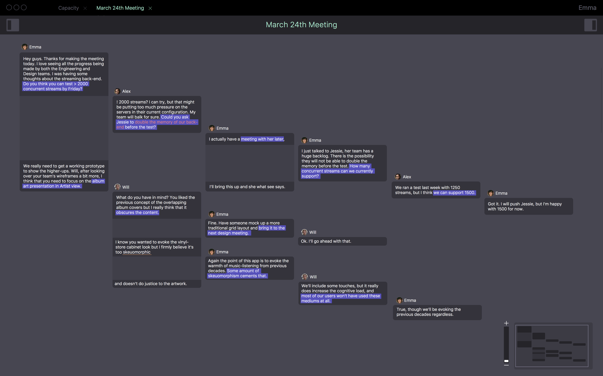
Converge Hierarchy
Having responses always diagonally adjacent from the point of reply cements their association.
Starting a New Conversation
A new conversation begins with an empty canvas and a blinking text cursor awaiting input for the first message.
Replying
Rather than replying to the whole of a previous message (such as on Facebook, Reddit, etc.), a reply is always tied to a specific, highlighted section of a message. By doing this, Converge elicits more explicit topic demarcation.
When a user selects the bit of text that they want to respond to, a blinking text cursor shows up immediately to the right of the selection. As the user begins typing, a comment immediately forms and continues growing as they type. This low-friction transition makes replying as quick as possible, without having to deal with cumbersome “reply” buttons.
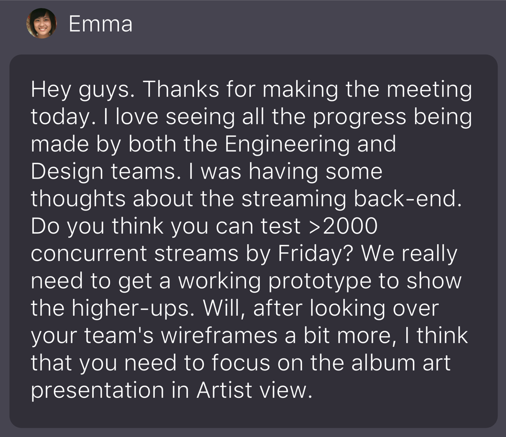
Initial Message
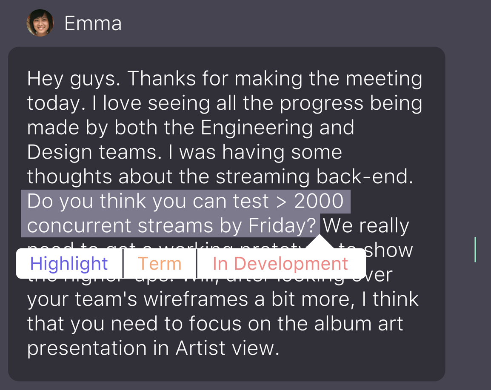
Highlighted Section
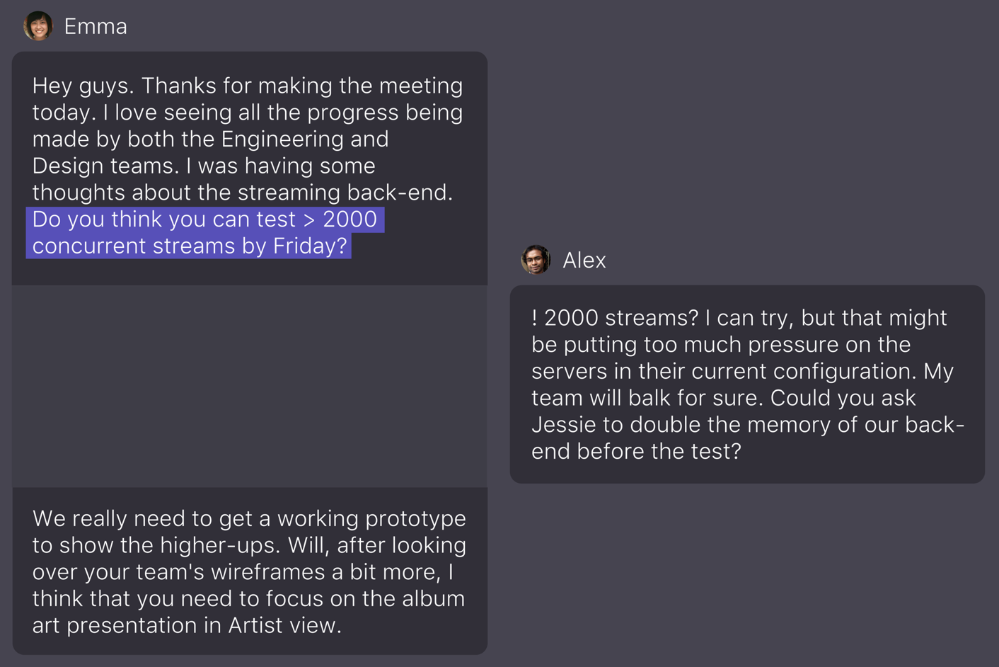
Initial Message and Reply
Highlighting
Replies on Converge are powered by highlights. Converge allows three different types of highlighting, and their differing types of coloring allows them to be easily superimposed. Once a section of text has been selected, a popover appears allowing the user to tag the selection as a classical highlight, term, or in development.
Classical Highlight
A classical highlight identified by a purple background is used to bring attention to a piece of content. Once highlighted, a user can decide whether to respond to the highlighted piece of content. If a response-highlight is in the middle of a comment, the lower part of that comment will displace down the height of the response, with a low-opacity area filling in between the now-displaced halves, communicating that they are part of the same comment.
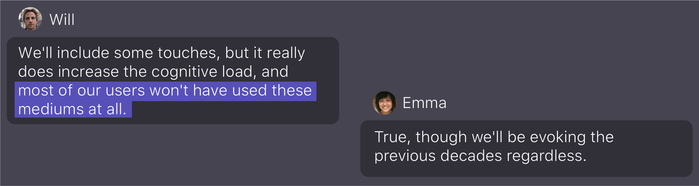
Classical Highlight
Highlight as Term
A “term” highlight tags specific words that are in need of a collective definition, identified with an orange underline. This highlight is used to establish a common understanding across the room’s participants, pinpointing places where disagreements might be yet undiscovered.
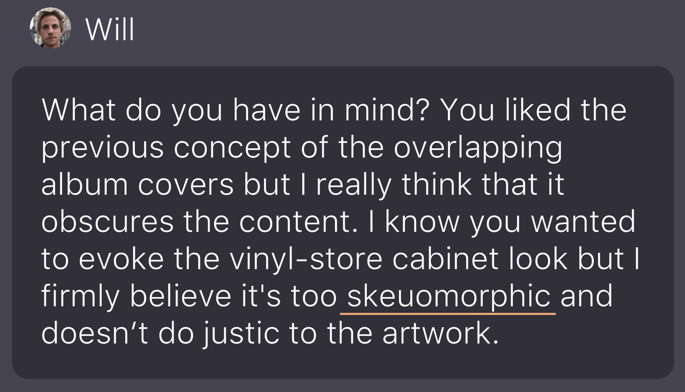
Highlight as Term
Highlight as In Development
Converge gives users the ability to “highlight as in development”, identified by pinkish-red text. This highlight is used to bring attention to a piece of content that needs to be developed further. For example, in this situation the team needs to figure out a way to double the memory of their servers.
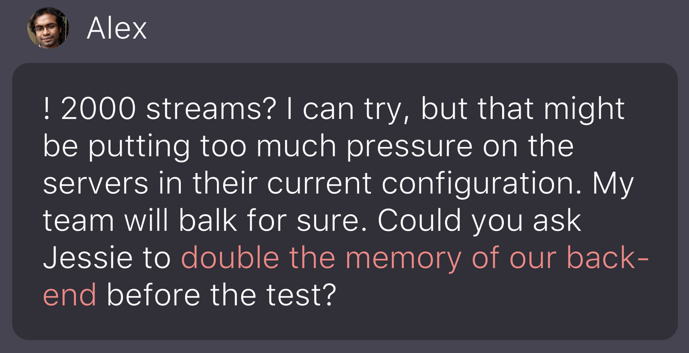
Highlight as In Development
Highlight Collation
These highlights are also collated in the right-hand panel, allowing users to easily survey and find specific pieces of content. Users can see who created the highlight, the time elapsed since the highlight was created, and the specific text that was highlighted.
Clicking on an item takes the viewer to that spot in the conversation.
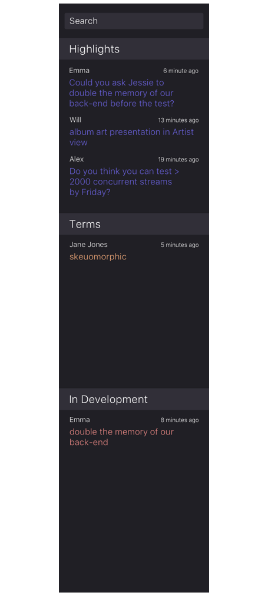
Highlight Panel
Minimap and Zooming
Converge gives users the ability to zoom in and out to see closer-up or abstracted views of the conversation. A minimap is shown in the bottom-right that proportionally depicts the entire conversation. This allows users to see where they are in conversations and view another part of the conversation (that might be outside the current view of the overall canvas). Users can zoom in and out by clicking the plus and minus bottoms, dragging the slider, or pinching in and out on multi-touch touchpads.
At the most zoomed-out level, the conversation enters a compacted mode where only highlighted text is shown. As the highlights have been collaboratively identified as the most important parts of a conversation, showing only highlights effectively filters out the less-pertinent sentences, allowing even quicker surveyability of the flow of the conversation.
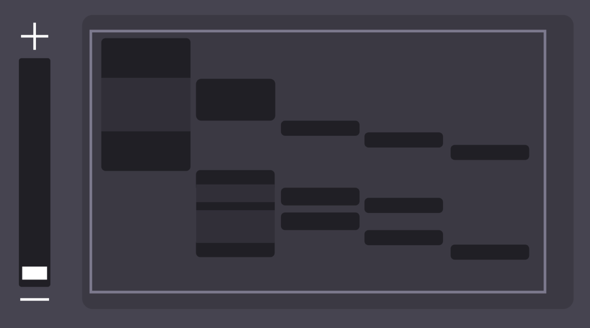
Minimap
Search
Users have the ability to search the conversation, with results populating in the highlights bar. Thus search results that match previously identified terms appear within the terms subsection — likewise with "in development". The top highlights section in the right-hand panel displays all matching text, highlighted or not; Non-highlighted matching strings are displayed as white while previously highlighted strings appear their purple color.
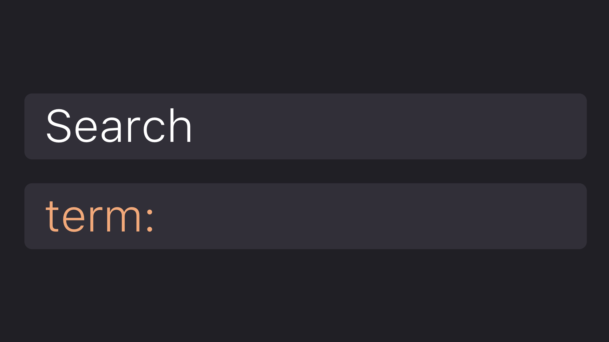
Search
Closing a Conversation
Once a conversation has run its course or is deemed “over”, right clicking on a conversation will make it inactive, shuffling down to the bottom of the left hand bar. Clicking on “Show Inactive Conversations” reveals the previously closed conversations.
Uploading Media
Converge supports the inline display of multimedia outside of text. Dragging images, videos/video links, audio, code, etc. into a comment field brings them into the conversation.
Full Mockups
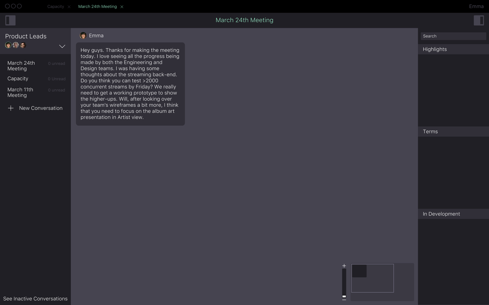
Converge Mockup
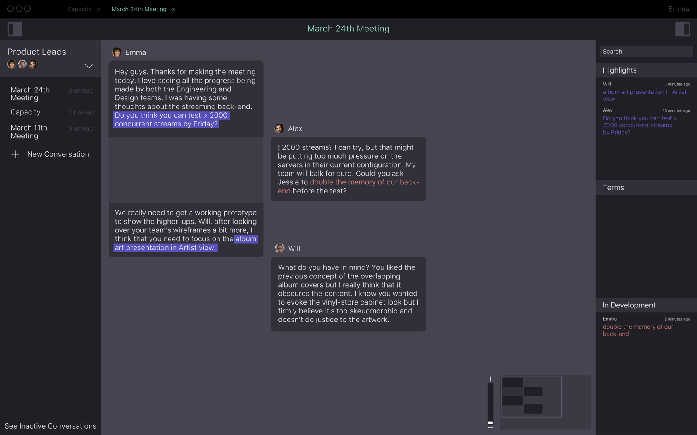
Converge Mockup
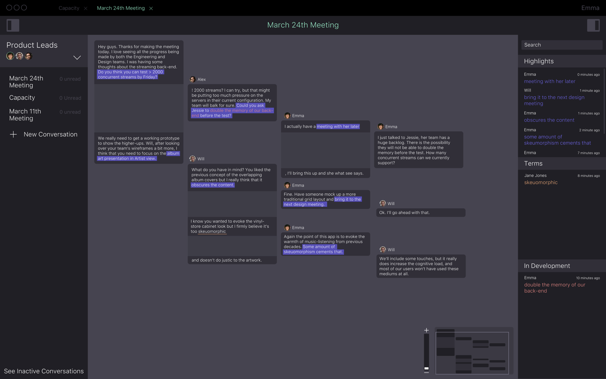
Converge Mockup
Conclusions
We believe that Converge provides a medium that simultaneously mirrors the non-linearity of in-person conversations while leveraging digital conversations’ surveyability to maximize understanding and explorability.
By working out the details involved in creating such a platform, we now have the materials to have more productive conversations concerning Converge.
Ultimately, we won’t know what Converge is until we have built out a working prototype and are able to get it into user’s hands.